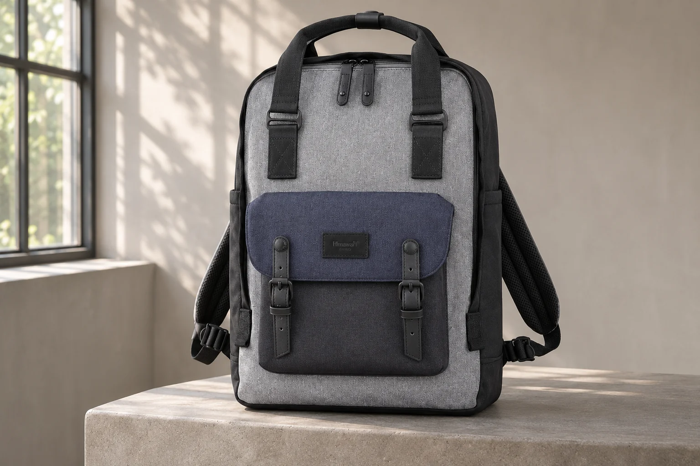
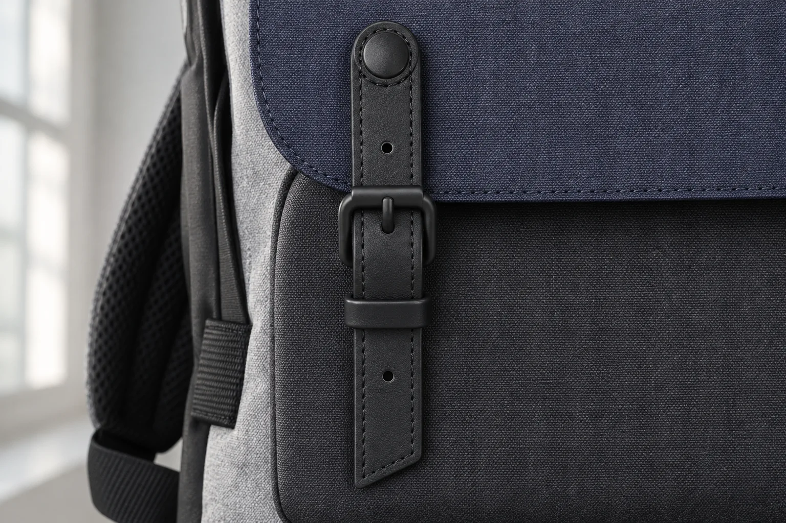
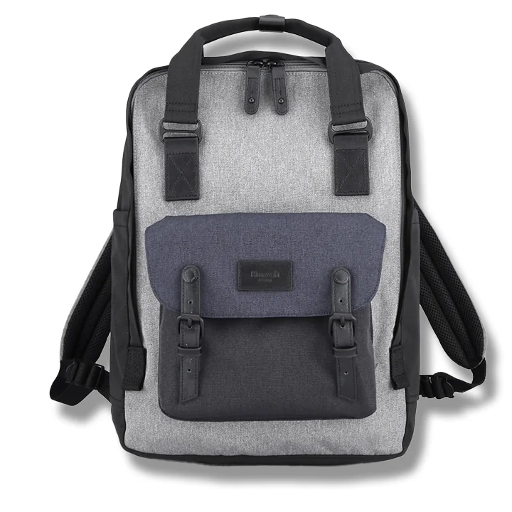

백팩 앞 버클의 구멍 한 곳이 늘어나 보인다면

No.1010 네이비그레이 원본에는 네이비색 앞 덮개 위로 검은 띠 두 개가 내려옵니다. 두 띠에는 버클 모양 부품이 붙어 있습니다. 띠 끝에서는 작은 구멍도 보입니다. 사진을 크게 보세요. 구멍에 빛이 들어오는 각도에 따라 한쪽이 더 길어 보일 수 있습니다. 쓰던 가방에서 모양이 달라졌다면 우선 앞판이 접혔는지 봅니다. 그다음 띠의 좌우를 확인하고 구멍을 확대해 보세요. 새 상품의 정갈한 사진만으로는 내 가방의 변화가 잘 드러나지 않습니다. 먼저 지금 내 가방에서 어떤 모양인지 기록해 둡니다.
보는 각도를 바꿀 때마다 모양이 달라진다면
가방을 평평한 곳에 받치고 버클을 정면에서 봅니다. 구멍이 뚫린 띠가 약간 비스듬하면 동그란 부분도 사진에서 타원처럼 보입니다. 손가락으로 띠를 세게 눌러 펴기 전에 기울어진 가방부터 바로잡습니다. 같은 위치에서 다시 찍어 보세요. 이때 양쪽 띠를 한 장에 담으면 구멍과 주변 바느질의 위치가 비교하기 좋습니다. 다른 한쪽 띠를 완전히 같은 상태로 만들 수 없다면 사진의 각도와 빛 방향만 맞춰도 됩니다.
정면 사진으로 끝을 구별하기 어려우면 빛을 옆에서 받아 봅니다. 구멍 입구에 난 그림자 때문에 실제보다 길게 보였는지, 바깥 선에 실처럼 가는 부분이 보이는지 확인할 수 있습니다. 빛 방향을 바꿀 때마다 테두리가 달라 보이나요? 가까이서 여러 번 찍기 전에 잠깐 손을 떼 보세요. 띠가 자연스럽게 내려온 모습을 먼저 남깁니다. 사진을 찍을 때 다른 손으로 띠를 당기지 않습니다. 처음 발견했을 때와 모양이 달라져 나중에 비교하기 어렵습니다.

같은 위치에 흔적이 남는다면
가방을 내려놓고도 특정 구멍만 들뜨거나 주위가 갈라져 보이나요? 그곳이 평소 어느 부품에 닿는지 살펴봅니다. 버클처럼 보이는 부품이 있다는 사실과 실제 덮개를 여닫는 방식은 정면 사진에서 모두 확인되지 않습니다. 평소 가방을 열고 닫을 때 어느 부품을 움직이는지 떠올려 보세요. 힘을 주지 않은 상태에서 그 부품과 구멍이 함께 보이게 찍습니다. 사진만 보고 띠를 빼거나 구멍을 한 칸 옮길 이유는 없습니다.
구멍 바로 옆의 작은 눌림과 띠 끝까지 이어진 갈라짐은 문의할 때 다르게 설명할 수 있습니다. ‘오른쪽 끝에서 두 번째 구멍 가장자리가 하얗게 보임’처럼 범위를 좁혀 적습니다. 발견한 날짜를 메모에 남기고 같은 거리에서 찍은 사진을 함께 보냅니다. 구멍 양옆이 붙어 있는지 살필 때도 겉에서 봅니다. 펜 끝이나 송곳을 넣으면 지금 모양을 알아보기 어려워질 수 있습니다. 여닫을 때 평소보다 힘이 드는지도 살펴봅니다. 잘 안 열리는 부위를 반복해서 조작할 필요는 없습니다.
좌우를 맞추고 싶은 경우
앞 덮개를 보관할 때에는 버클이 바구니 벽이나 다른 가방의 금속 부품에 눌린 채인지도 살펴봅니다. 가방을 바닥에 세우거나 옆으로 눕히면 버클의 방향이 달라집니다. 꺼낼 때마다 한쪽만 밀린다면 선반에서 가방의 앞뒤를 바꿔 보세요. 두 번 찍은 사진이 다르게 보인다면 탁자 끝과 라벨의 방향을 맞춘 사진을 기준으로 다시 봅니다. 이 정도로 변형의 원인까지 단정하기는 어렵습니다. 그래도 보관할 때 눌린 자리가 구멍 옆인지 전혀 다른 부분인지는 가려낼 수 있습니다. 수선이 필요하면 기억해 둔 접촉 위치도 함께 전하면 됩니다.
검은 띠 끝의 높이가 눈에 띄게 다른가요? 앞 포켓이 빵빵하게 차 있는지 먼저 봅니다. 물건을 빼고 눕혀 두면 덮개가 다시 고르게 앉을 수 있습니다. 그 뒤에도 차이가 보이면 두 버클 아래를 다시 봅니다. 보이는 띠 길이와 구멍 위치를 구분해 기록합니다. 띠 길이가 달라 보이는 것만으로 이전 사용자가 다른 구멍에 부품을 걸었다고 판단할 수는 없습니다. 상품 원본에서 검은 부품 주변은 그림자가 짙습니다. 구입 전에 조절 가능 여부를 알아야 한다면 개폐 안내까지 확인하세요.
외관을 맞추는 일이 먼저인지도 생각해 볼 수 있습니다. 덮개가 제 위치에 있는데 한쪽 끝만 앞쪽으로 말린다면 손이 닿는 자리, 가방을 좁은 선반에 밀어 넣는 방향, 앞 포켓이 눌리는 빈도를 각각 살펴보세요. 어디에 걸리는지 알아야 가방을 놓는 방향을 바꿀지, 부품 점검을 문의할지 정할 수 있습니다. 멀리서 보면 잘 구별되지 않는 작은 흔적도 있습니다. 같은 부위가 며칠 사이에 달라졌다면 며칠 간격으로 찍은 사진을 나란히 두고 봅니다. 한 번 찍은 근접 사진으로는 그 사이에 어떤 변화가 있었는지 확인하기 어렵습니다.

이 모델에서 확인할 것
No.1010 네이비그레이의 제조사 외부 치수는 가로 33cm, 세로 45cm, 폭 15cm입니다. 회색 몸판과 네이비 덮개, 가운데 검은 라벨, 양쪽 검은 띠가 공식 원본의 위치를 찾을 기준입니다. 치수에 띠 구멍의 규격이나 여밈 부품의 교체 단위는 들어 있지 않습니다. 판매 상품과 똑같은 이름이 적혀 있어도 실제 손에 든 가방의 부품 모양까지 일치하는지는 다시 봅니다. 수선 문의에는 제품번호와 색상을 적습니다. 보이는 구멍과 근처 버클을 한 컷에 담으면 부품을 특정하기가 쉽습니다.
새 가방을 고르는 단계라면 앞 포켓을 자주 여는지부터 떠올려 봅니다. 외관상 버클이 마음에 들어도 손이 어디에 닿는지, 여닫을 틈이 어느 정도인지가 사용 편의에 더 직접적인 정보일 수 있습니다. 써 본 뒤 작은 자국이 생겼다면 가방을 바닥에 놓고 처음 찍은 사진과 비교하세요. 처음 찍은 사진과 같은 자리에서 모양을 봅니다. 테두리가 그대로인지 더 벌어졌는지 기록해 두면, 잠시 지켜볼지 점검을 문의할지 정하기가 수월합니다.